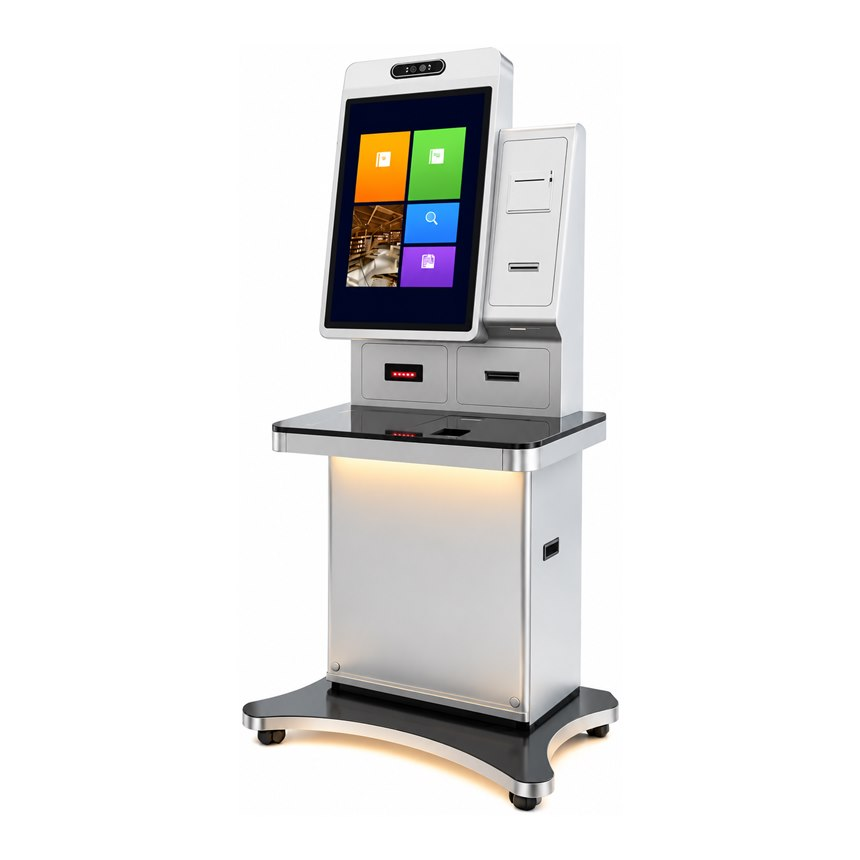

32-Inch Multi-Industry Self-Service Terminal
A 32-inch 2560 × 1440 portrait display above a glass deck, with 1D/2D scanning, IC/ID and bank card reading and a receipt printer in the side column. One cabinet for five counter types.
One chassis, five counter environments
Border posts, bank halls, hotel lobbies, cinema foyers and supermarket service desks ask for the same core actions: identify the customer, take a document or a payment, print something back. This terminal is built as the common hardware answer to those four actions, so a project can be quoted once and then adapted by module rather than by cabinet. The illuminated deck and the LED base are there for attended lobbies where the unit has to read as furniture, not as a machine.
Technical specifications
| Display | 32 inch portrait touchscreen, 2560 × 1440 (QHD) |
|---|---|
| Operating system | Windows / Android / Linux — one cabinet, three platform routes |
| Barcode scanner | 1D barcode and 2D QR code reading, set into the illuminated window below the screen |
| Card readers | IC card, ID card and bank card reading — contact and contactless handled by the reader modules selected |
| Identity documents | National ID card reader, including second-generation Chinese ID where the reader module supports it |
| Receipt printer | 80 mm thermal printer in the side column; A4 document printing available as an option |
| Camera | Front camera and sensor bar above the display, ready for face capture and liveness checks |
| Cabinet | Brushed stainless steel body, tempered glass counter deck, separate lockable service door |
| Mounting | Floor-standing curved base with lockable castors, or a fixed plinth for permanent sites |
| Options | Passport MRZ reader, fingerprint sensor, cash acceptor and recycler, NFC, second display |
Operating system support
The cabinet is quoted with Windows, Android or Linux. The choice normally follows your middleware: identity and bank platforms arrive with a Windows stack, hotel and retail apps with Android, and unattended sites with a locked Linux image.
Windows
Used when identity, banking or ticketing middleware expects Windows services and signed drivers.
Android
Used when the front end ships as an Android package and each peripheral has an SDK.
Linux
Used for unattended sites that need a hardened image and a browser-based front end.
Embedded modules
These are the modules visible on the reference unit. Each is mounted inside the cabinet, powered from the internal harness and exposed to your application through the platform drivers or an SDK.
- 32-inch 2560 × 1440 portrait touchscreen
- 1D barcode and 2D QR scanner
- IC card reader
- ID card and national ID card reader
- Bank card reader
- 80 mm receipt printer
- Front camera and sensor bar
- Tempered glass scan deck
- LED base lighting
- Lockable service cabinet
Optional modules for custom builds
The reference build covers barcode capture, card reading and receipt printing. Where a counter also needs identity verification or cash, the modules below go into the same enclosure; position, interface and certification are confirmed per project.
Passport & MRZ reader
Adds travel-document reading for border, hotel and car-rental check-in. MRZ is standard; chip reading depends on the reader module chosen.
Fingerprint sensor
Captures a fingerprint at enrolment, access or payment steps. Sensor type, window position and SDK support are agreed during specification.
Cash acceptor & recycler
For bank and retail counters that still take notes. Capacity, cassette layout and recycling logic follow the acquirer or vendor stack.
A4 document printing, NFC, a second display or a custom keypad can also be reviewed on request. Module combinations are customized to customer requirements: send the list and we reply with what fits this cabinet, what needs a new enclosure and what the certification path looks like.
Typical applications
Immigration and border control counters
Bank branch card and account services
Hotel self check-in and key issuing
Cinema ticket collection and membership
Supermarket self-service and loyalty desks
Configuration options
Options to discuss for your project. Final specifications, module compatibility and ratings are confirmed in writing before an order.
- Screen brightness and touch technology for the 32-inch panel
- Camera bar: face capture, liveness or document scanning
- Card reader set — IC, ID, bank card, contact, contactless or hybrid — and EMV level
- Scanner set: 1D barcode, 2D QR, MRZ or document camera
- Printer: 80 mm receipt, A4 document or none
- Cabinet finish, LED lighting and branding panel
- Windows, Android or Linux with your application stack
- Floor-standing base with lockable castors or a fixed plinth
Before you request a quote
Which markets will the unit be deployed in?
Is the terminal attended or unattended?
Which identity checks are required?
Request a quote
Send the counter type, the card and scan types you need, your operating system choice and the estimated quantity. We reply with the closest build, the open questions and the next step.
Discuss the 32-inch terminal OEM / ODM options
Related kiosk models
Units built for the same service environment. Each can be quoted with the same platform and module set.